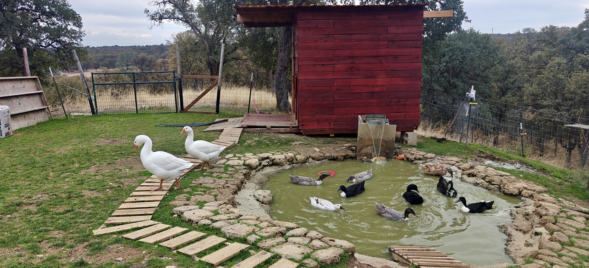
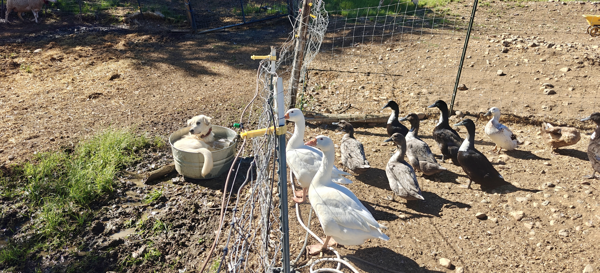
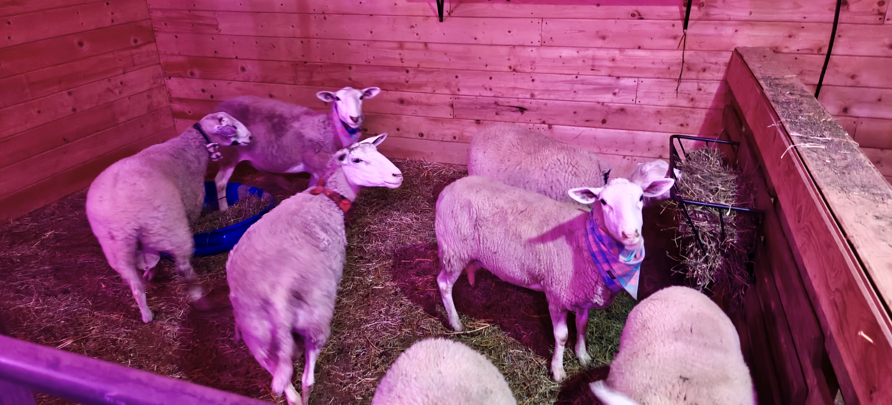
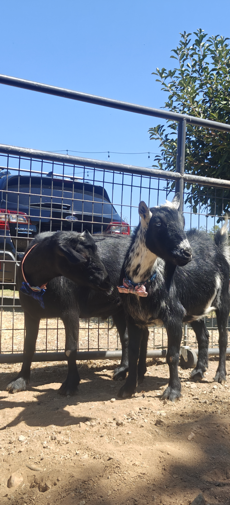
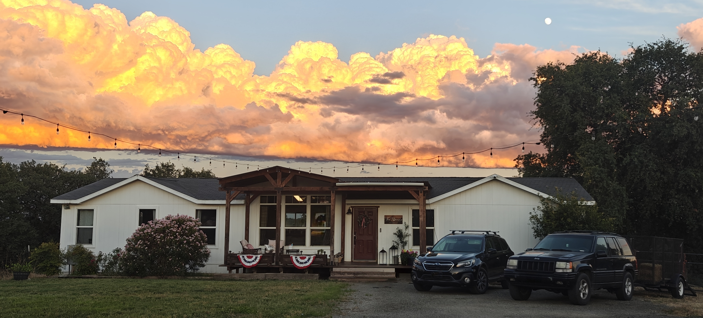
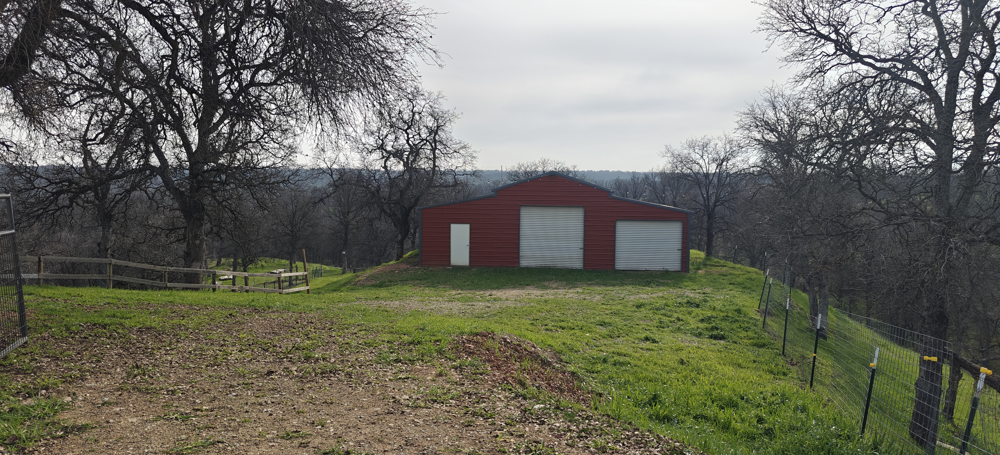
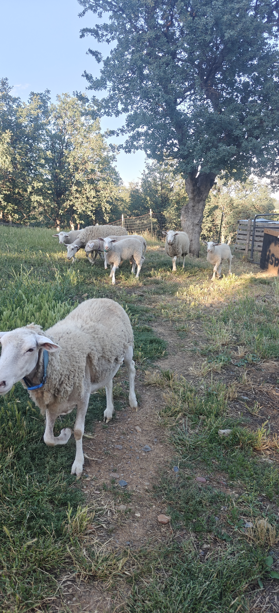
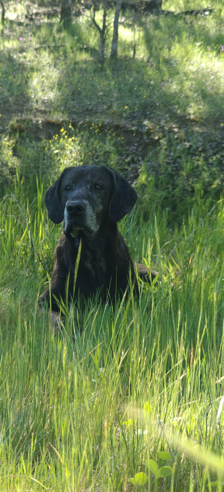
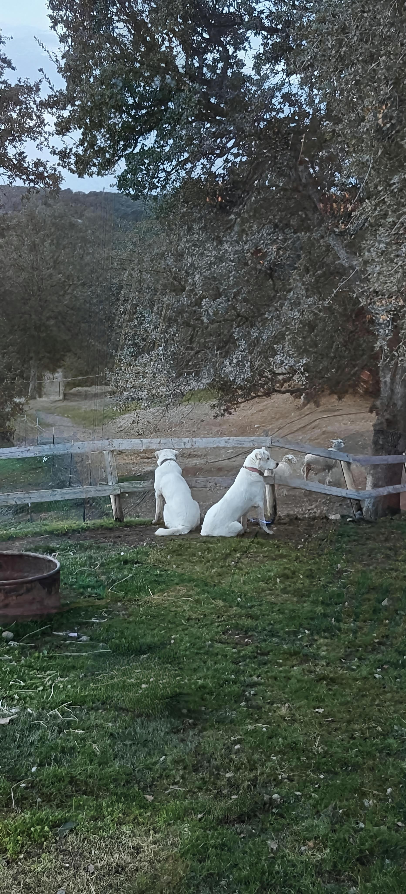

Welcome to Wishing Star Farms
Nestled in the heart of Northern California, Wishing Star Farms is a small, family-owned farm built on a love for the land, a passion for animals, and a dream of creating something lasting.
What began as a dream of a little more space and a simpler way of life has grown into a farm where sheep graze in the pastures, ducks and geese roam, and every day brings something new to learn.
We're passionate about raising healthy, resilient animals and building a sustainable farm that works in harmony with the land. From developing diverse pastures and planting forage trees to caring for our growing flock, we're always finding new ways to make our little corner of the world a better place for the animals that call it home.
Our goal is to build a farm that can be enjoyed for generations, one that values hard work, responsible animal care, and the simple joys of country living.
We're still growing, learning, and figuring things out along the way, but we're proud of what we're building and grateful to share the journey with you.
Thanks for being part of our story.
Care for the Land
Building healthier pastures and a more diverse, resilient farm landscape.
Thoughtful Animal Care
Healthy animals, attentive husbandry, and room to grow and thrive.
Built for the Long Run
A family farm shaped with patience, purpose, and future generations in mind.
Life on the Farm
A few glimpses of the animals, the land, and the work that make Wishing Star Farms home.









Thanks for stopping by.
Wishing Star Farms is growing thoughtfully, one season and one project at a time. We look forward to sharing more of the journey as our farm continues to take shape.